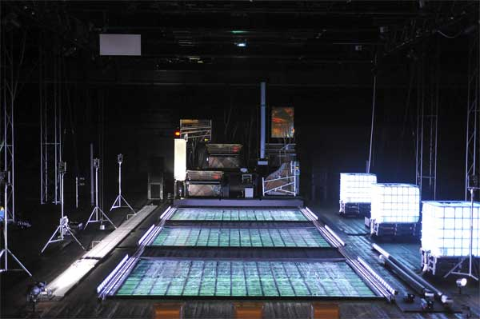

-
Heiner Goebbels at Lincoln Center
by Lauren DiGiulio January 7, 2010
The work of Adalbert Stifter, the 19th-century Austrian novelist, has been the subject of a polarizing critical debate since its earliest publications. Marked by long and detailed descriptions of characters’ environs, his work is often criticized for being tedious and overly mannered. Yet there seems to be a deliberate rhythm to his method; by forcing the reader to slow down and contemplate objects and landscape around his characters, he reveals something unique about the way humans relate to their various surroundings.
Heiner Goebbels takes such inspiration from Stifter’s texts to create Stifter’s Dinge, a mechanized installation presented last month at the Park Avenue Armory as part of Lincoln Center’s Great Performers Season. Offering a multimedia performance work that takes the writer’s affinity for objects and landscape as a point of departure, Goebbels investigates to what extent humans can control ecological forces and negotiate an uncertain future.
The work is presented as a self-contained multimedia installation that incorporates sound, video, and moving visual elements to create a tableau synthesizing these disparate forms. Were it not for the absence of actors, the piece would undoubtedly read as a modern formulation of a 19th-century Gesamtkunstwerk. Instead, it is precisely this absence that Goebbels explores. By foregrounding elements that usually serve to underscore or illustrate main action within a traditional theatrical setting – lighting, sound, fog, projection – the artist focuses audience attention on detail, asking us to slow our sensory perception to examine objects as signifiers of human presence.
The installation is centered on a group of five pianos whose cabinets have been stripped away to expose their inner workings. Sound is produced by mechanical manipulation of the instruments in several ways; the automatic movement of keys on some resembles traditional player pianos, while the strings of others are plucked directly with a mechanical arm. One instrument consists solely of a grand piano’s soundboard, plate, and bass strings, which is tilted vertically and played with a device that strums along the length of the strings. Here, the copper coils that wrap around the steel core of the string are physically articulated, resulting in a low ratcheting sound that adds a distinct tension to the music.
The pianos are arranged on a moving platform among several flat metal sheets, which are also mechanically manipulated to produce sound. Pipes, speakers, and audio equipment are added to the stage, and tree branches are tucked between instruments. Taken together, these elements become a single entity that functions as the visual protagonist of the work, producing most of the live sound and acting as a backdrop for the video projection. Its movement within the environment scores the piece’s visual rhythm; it moves, by turns, downstage and back until finally arriving at the foot of the space in a grand climatic gesture.
The platform is situated behind three large troughs, which are sprinkled with dry ice at the beginning of the piece. Water from three adjacent tanks is siphoned into the troughs, causing the ice to bubble and create a mystic, foggy atmosphere that evokes the restive subtext of Stifter’s phrasing. Speakers are placed alongside the troughs, as well as various other sound-producing elements, including industrial pipes that bellow when struck upon their open ends, and a stone that produces a grating noise when mechanically dragged along a longer length of rock.
If the entire piece can be viewed as something of a multi-sensory symphony, then these physical elements play an supporting role to the overarching melodic line created by recorded songs, spoken text, and projected video that carry the narrative forward. A mélange of international sources is evoked to create a distinctive collage that explores the human response to both nature and to humanity’s own, historically dominant power structures.
Early 20th-century recordings of indigenous songs from Papua New Guinea, Greece, and Colombia are played over lit speakers. A movement from Bach’s Italian Concerto in F Major is performed with surprising subtlety by the player pianos. In an excerpt from a 1988 radio interview, a contemplative Claude Levi-Strauss describes his own solitary nature and intimates a loss of faith in humankind. We hear William S. Burroughs denounce free-market capitalism, and Malcolm X reject the dominance of Eurocentric ideas to assert the emergence of a new value system.
A recording of Stifter’s short story “The Ice Tale” is played over a speaker while a van Ruisdael landscape, Swamp, of 1660, is projected onto an upstage screen. Here, Goebbels creates a potent visual and aural environment that directs appreciation towards both the form and the content of the spoken text. Meanwhile, the color tone of the landscape is slowly modulated from vibrant green to dark sepia in a slow loop that rehearses the passage of time upon objects. Stifter’s text describes a first-person narrative account of a journey through a winter landscape, wherein the characters become awestruck upon hearing, and later seeing, ice falling from the trees around them. The exhaustive detail with which natural elements are described invites the listener to slow her attention and contemplate the drama in the description. A slow plucking of piano strings accompanies the recorded text and further heightens the ominous nature of the scene.
By juxtaposing these various elements of sound and image from across a cultural and historical landscape, Goebbels aims at constructing a broadened, alternative viewpoint from which to consider our relationship to nature. In his program note, the composer states that the work takes Stifter’s texts as a “confrontation with the unknown and the forces that man does not master, as a plea for the readiness to adopt other criteria and judgements than our own and even as an opportunity to come to terms with unfamiliar cultural references.” Goebbels references certainly present us with a diverse international perspective that explores human history’s grappling with itself, represented through a metaphor of struggle with the unknown wilderness. However, to the extent that the work attempts to reference the “unfamiliar cultures”, well-intentioned though this goal may be, it places itself on a rather more slippery slope, insofar as that concept has become somewhat more loaded in the contemporary moment.
Ultimately, the work offers a striking interpretation of Stifter’s language that is at once visually stunning and aurally provocative. The title of the work, Stifter’s Dinge, translates to “Stifter’s things”, and it is precisely Stifter’s fondness for the objects he describes that Goebbels explores. By limiting human presence within the piece and focusing on atmospheric elements, the artist celebrates both natural and man-made material. These effectively become signifiers of human presence, simultaneously reminding us of our collective achievements – and our shortcomings – within the presence of larger natural forces. Considered this way, the work becomes a celebration that continues to linger long after the sound of the piano strings’ final plucking has died away.
Stifter’s Dinge (2007), composed and conceived by Heiner Goebbels, was presented by Lincoln Center on December 16-20 at the Park Avenue Armory as part of the Great Performers Season.

{kind=link}
{kind=link}
{kind=link}